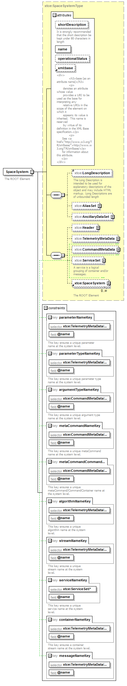

| diagram |  | ||||||||||||||||||||||||||||||||||||||||||||||||||||||||||||||||||||||||||||||||||||
| namespace | http://www.omg.org/space/xtce | ||||||||||||||||||||||||||||||||||||||||||||||||||||||||||||||||||||||||||||||||||||
| type | xtce:SpaceSystemType | ||||||||||||||||||||||||||||||||||||||||||||||||||||||||||||||||||||||||||||||||||||
| properties |
|
||||||||||||||||||||||||||||||||||||||||||||||||||||||||||||||||||||||||||||||||||||
| children | xtce:LongDescription xtce:AliasSet xtce:AncillaryDataSet xtce:Header xtce:TelemetryMetaData xtce:CommandMetaData xtce:ServiceSet xtce:SpaceSystem | ||||||||||||||||||||||||||||||||||||||||||||||||||||||||||||||||||||||||||||||||||||
| used by |
|
||||||||||||||||||||||||||||||||||||||||||||||||||||||||||||||||||||||||||||||||||||
| attributes |
|
||||||||||||||||||||||||||||||||||||||||||||||||||||||||||||||||||||||||||||||||||||
| identity constraints |
|
||||||||||||||||||||||||||||||||||||||||||||||||||||||||||||||||||||||||||||||||||||
| annotation |
|
||||||||||||||||||||||||||||||||||||||||||||||||||||||||||||||||||||||||||||||||||||
| source | <element name="SpaceSystem" type="xtce:SpaceSystemType" nillable="true"> <annotation> <documentation xml:lang="en">The ROOT Element</documentation> </annotation> <key name="parameterNameKey"> <annotation> <documentation xml:lang="en">This key ensures a unique parameter name at the system level.</documentation> </annotation> <selector xpath="xtce:TelemetryMetaData/xtce:ParameterSet/* | xtce:CommandMetaData/xtce:ParameterSet/*"/> <field xpath="@name"/> </key> <key name="parameterTypeNameKey"> <annotation> <documentation xml:lang="en">This key ensures a unique parameter type name at the system level.</documentation> </annotation> <selector xpath="xtce:TelemetryMetaData/xtce:ParameterTypeSet/* | xtce:CommandMetaData/xtce:ParameterTypeSet/*"/> <field xpath="@name"/> </key> <key name="argumentTypeNameKey"> <annotation> <documentation xml:lang="en">This key ensures a unique argument type name at the system level.</documentation> </annotation> <selector xpath="xtce:CommandMetaData/xtce:ArgumentTypeSet/*"/> <field xpath="@name"/> </key> <key name="metaCommandNameKey"> <annotation> <documentation xml:lang="en">This key ensures a unique metaCommand name at the system level.</documentation> </annotation> <selector xpath="xtce:CommandMetaData/xtce:MetaCommandSet/*"/> <field xpath="@name"/> </key> <key name="metaCommandCommandContainerNameKey"> <annotation> <documentation xml:lang="en">This key ensures a unique metaCommand/CommandContainer name at the system level.</documentation> </annotation> <selector xpath="xtce:CommandMetaData/xtce:MetaCommandSet/xtce:MetaCommand/xtce:CommandContainer"/> <field xpath="@name"/> </key> <key name="algorithmNameKey"> <annotation> <documentation xml:lang="en">This key ensures a unique algorithm name at the system level.</documentation> </annotation> <selector xpath="xtce:TelemetryMetaData/xtce:AlgorithmSet/* | xtce:CommandMetaData/xtce:AlgorithmSet/*"/> <field xpath="@name"/> </key> <key name="streamNameKey"> <annotation> <documentation xml:lang="en">This key ensures a unique stream name at the system level.</documentation> </annotation> <selector xpath="xtce:TelemetryMetaData/xtce:StreamSet/* | xtce:CommandMetaData/xtce:StreamSet/*"/> <field xpath="@name"/> </key> <key name="serviceNameKey"> <annotation> <documentation xml:lang="en">This key ensures a unique service name at the system level.</documentation> </annotation> <selector xpath="xtce:ServiceSet/*"/> <field xpath="@name"/> </key> <key name="containerNameKey"> <annotation> <documentation xml:lang="en">This key ensures a container stream name at the system level.</documentation> </annotation> <selector xpath="xtce:TelemetryMetaData/xtce:ContainerSet/* | xtce:CommandMetaData/xtce:CommandContainerSet/*"/> <field xpath="@name"/> </key> <key name="messageNameKey"> <selector xpath="xtce:TelemetryMetaData/xtce:MessageSet/*"/> <field xpath="@name"/> </key> </element> |